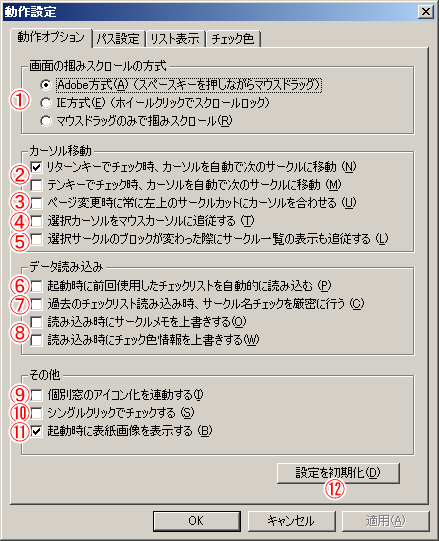
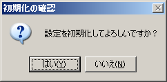

動作オプションでは、アプリケーションのオプション機能に関しての設定を行うことができます。
オプション設定には以下の項目があります。

サークルカットウィンドウや会場マップウィンドウでの、画面の「掴みスクロール」の方式を設定します。
以下の2タイプの内から選択します。
リターンキー（標準色）でチェックリストに加えた際に、サークル選択カーソルを自動的にひとつ次のサークルに移動するかどうかを設定します。
チェックボックスをチェックしておくことで、自動移動がONになります。
テンキーでチェックリストに加えた際に、サークル選択カーソルを自動的にひとつ次のサークルに移動するかどうかを設定します。
チェックボックスをチェックしておくことで、自動移動がONになります。
チェックすると、ページを前後したときに、カーソルの位置が常に一番左上に移動するようになります。
チェックすると、サークルカットウィンドウ上でマウスカーソルを動かした場合に、マウスカーソル位置のサークルがクリックしなくても自動的に選択されるようになります。
サークル一覧はサークルスペースのブロック単位で表示されていますが、他のウィンドウで選択カーソルを動かしてブロックをまたいだ場合に、サークル一覧表示を自動的に移動先のブロックに切り替えるかどうかを設定します。
切り替え時の時間が気になる方は、チェックを外して追従機能をOFFにしておくと、ブロックをまたいだ移動が多少速くなります。
チェックすると、最後に使用したチェックリストを次回起動時に自動的に読み込むようになります。
チェックすると、過去のチェックリストを読み込む（インポートする）際に、サークル名の比較を厳密に行うようになります。
意図したのとは異なるサークルが読み込まれる場合、このオプションをONにしてチェックリストを読み込んでみてください。
チェックすると、チェックリストの読み込み時にサークルメモ/チェック色情報を上書きするようになります。
チェック色情報の上書き対象は、(1)色の定義 (2)既にチェックされているサークルの色情報 です。未チェックのサークルの 色情報は常に上書きされます。
チェックすると、サークルカット・チェックリスト・サークル詳細のウィンドウの最小化と最大化が連動するようになります。
チェックすると、サークルカットウィンドウで1クリックでチェックリストに入れることが可能になります。
尚、シングルクリックチェック時は、「選択カーソルの追従」が自動的にONになります。
チェックを解除すると、起動時の表紙画像が表示されなくなります。
ボタンを押すと、設定を初期化するか確認ダイアログが開きます。はいを押すと動作オプションの設定が全て初期化されます。
